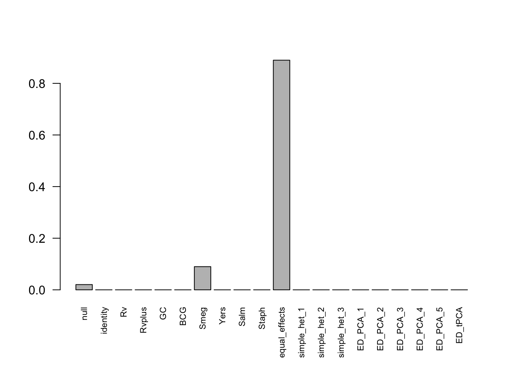
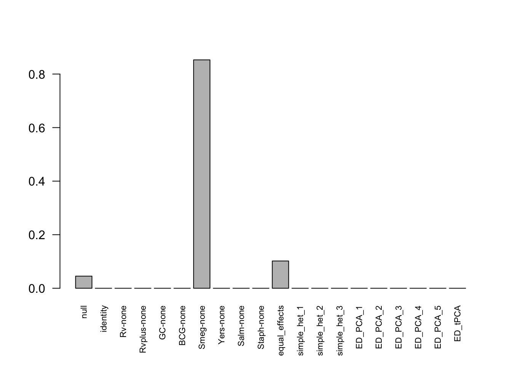
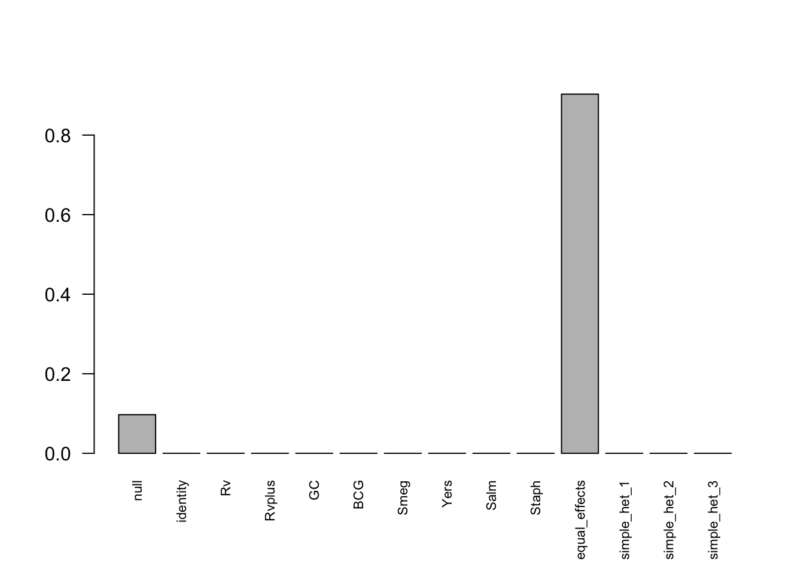

library(limma)
library(ashr)
library(mashr)The data includes the gene expression data (table_s1) of 12,728 genes from 54 samples infected by 8 different types of bacteria and one non-infected control, measured at 18 hours post-infection.
We randomly permute the samples with respect to the condition labels so that there no longer exists association between gene expression levels and conditions.
dat = readRDS('../output/Expression_data.rds')
set.seed(123)
perm = sample(1:54, 54)
d1 = dat$data[,perm]
colnames(d1) = colnames(dat$data)
fit1=lmFit(object = d1, dat$design_diff)
fit1<-eBayes(fit1)
b1 = fit1$coefficients[,-1]
s1 <- fit1$stdev.unscaled[,-1] * sqrt(fit1$s2.post)
t1 <- fit1$t[,-1]
df1 <- fit1$df.total
fit2=lmFit(object = d1, dat$design_mean)
fit2<-eBayes(fit2)
b2 = fit2$coefficients
s2 <- fit2$stdev.unscaled * sqrt(fit2$s2.post)
t2 <- fit2$t
df2 <- fit2$df.totalFit ash for each condition:
m1.data = mash_set_data(b1, s1)
m1.1by1 = mash_1by1(m1.data)
fpash = colSums(m1.1by1$result$lfsr < 0.05)The false positive rates using ash:
fpash/nrow(d1)## Rv Rvplus GC BCG Smeg Yers
## 0.0014142049 0.0000000000 0.0000000000 0.0000000000 0.0051068510 0.0001571339
## Salm Staph
## 0.0006285355 0.0000000000Fit mash on DE data:
strong1 = get_significant_results(m1.1by1, 0.05)
U1.pca = cov_pca(m1.data, 5, subset=strong1)
U1.ed = cov_ed(m1.data, U1.pca, subset=strong1)
U1.c = cov_canonical(m1.data)
m1.fit.diff = mash(m1.data, c(U1.c,U1.ed))## - Computing 12728 x 419 likelihood matrix.
## - Likelihood calculations took 7.72 seconds.
## - Fitting model with 419 mixture components.
## - Model fitting took 29.44 seconds.
## - Computing posterior matrices.
## - Computation allocated took 11.48 seconds.fpmash.diff = length(get_significant_results(m1.fit.diff))The FPR is 0.3399591. We check estimated weights:
barplot(get_estimated_pi(m1.fit.diff), las=2, cex.names = 0.7)
The ED priors already adjusted with a small diagonal elements. We add a small number on the diagonal of cannonical priors:
U1.c.diag = lapply(U1.c, function(U) U + 0.01 * diag(8))
m1.fit.diff.diag = mash(m1.data, c(U1.c.diag, U1.ed))## - Computing 12728 x 419 likelihood matrix.
## - Likelihood calculations took 7.86 seconds.
## - Fitting model with 419 mixture components.
## - Model fitting took 33.16 seconds.
## - Computing posterior matrices.
## - Computation allocated took 8.48 seconds.fpmash.diff.diag = length(get_significant_results(m1.fit.diff.diag))The FPR is 0.3370522. We check estimated weights:
barplot(get_estimated_pi(m1.fit.diff.diag), las=2, cex.names = 0.7)Fit mash common baseline:
m2.data = mash_set_data(b2, s2)
m2.data.L = mash_update_data(m2.data, ref='none')
m2.1by1 = mash_1by1(m2.data.L)
strong2 = get_significant_results(m2.1by1, 0.05)
U2.pca = cov_pca(m2.data.L, 5, subset=strong2)
U2.ed = cov_ed(m2.data.L, U2.pca, subset=strong2)
U2.c = cov_canonical(m2.data.L)
m2.fit.mean = mash(m2.data.L, c(U2.c,U2.ed))## - Computing 12728 x 419 likelihood matrix.
## - Likelihood calculations took 8.18 seconds.
## - Fitting model with 419 mixture components.
## - Model fitting took 34.68 seconds.
## - Computing posterior matrices.
## - Computation allocated took 7.37 seconds.fpmash.mean = length(get_significant_results(m2.fit.mean))The FPR is 0.1851037. We check estimated weights:
barplot(get_estimated_pi(m2.fit.mean), las=2, cex.names = 0.7)Add a small number on the diagonal of priors:
U2.c.diag = lapply(U2.c, function(U) U + 0.01 * diag(8))
m2.fit.mean.diag = mash(m2.data.L, c(U2.c.diag, U2.ed))## - Computing 12728 x 419 likelihood matrix.
## - Likelihood calculations took 7.81 seconds.
## - Fitting model with 419 mixture components.
## - Model fitting took 32.12 seconds.
## - Computing posterior matrices.
## - Computation allocated took 7.08 seconds.fpmash.mean.diag = length(get_significant_results(m2.fit.mean.diag))The FPR is 0.1704117. We check estimated weights:
barplot(get_estimated_pi(m2.fit.mean.diag), las=2, cex.names = 0.7)
If we exclude data-driven priors,
m2.fit.mean.c = mash(m2.data.L, U2.c)## - Computing 12728 x 287 likelihood matrix.
## - Likelihood calculations took 5.34 seconds.
## - Fitting model with 287 mixture components.
## - Model fitting took 18.96 seconds.
## - Computing posterior matrices.
## - Computation allocated took 9.15 seconds.fpmash.mean.c = length(get_significant_results(m2.fit.mean.c))The FPR is 0.1851037. We check estimated weights:
barplot(get_estimated_pi(m2.fit.mean.c), las=2, cex.names = 0.7)We use independent and different permutation to each gene.
dat = readRDS('../output/Expression_data.rds')
set.seed(123)
d2 = dat$data
for(i in 1:nrow(dat$data)){
perm = sample(1:54, 54)
d2[i,] = d2[i,perm]
}
fit3=lmFit(object = d2, dat$design_diff)
fit3<-eBayes(fit3)
b3 = fit3$coefficients[,-1]
s3 <- fit3$stdev.unscaled[,-1] * sqrt(fit3$s2.post)
t3 <- fit3$t[,-1]
df3 <- fit3$df.total
fit4=lmFit(object = d2, dat$design_mean)
fit4<-eBayes(fit4)
b4 = fit4$coefficients
s4 <- fit4$stdev.unscaled * sqrt(fit4$s2.post)
t4 <- fit4$t
df4 <- fit4$df.totalFit ash for each condition:
m3.data = mash_set_data(b3, s3)
m3.1by1 = mash_1by1(m3.data)
fpash.g = colSums(m3.1by1$result$lfsr < 0.05)The false positive rates using ash:
fpash.g/nrow(d2)## Rv Rvplus GC BCG Smeg Yers
## 0.000000e+00 0.000000e+00 0.000000e+00 7.856694e-05 0.000000e+00 0.000000e+00
## Salm Staph
## 0.000000e+00 0.000000e+00Fit mash on DE data:
U3.c = cov_canonical(m3.data)
m3.fit.diff = mash(m3.data, U3.c)## - Computing 12728 x 300 likelihood matrix.
## - Likelihood calculations took 6.24 seconds.
## - Fitting model with 300 mixture components.
## - Model fitting took 21.16 seconds.
## - Computing posterior matrices.
## - Computation allocated took 10.70 seconds.fpmash.diff.g = length(get_significant_results(m3.fit.diff))The FPR is 0.2403363. We check estimated weights:
barplot(get_estimated_pi(m3.fit.diff), las=2, cex.names = 0.7)
Fit mash common baseline:
m4.data = mash_set_data(b4, s4)
m4.data.L = mash_update_data(m4.data, ref='none')
m4.1by1 = mash_1by1(m4.data.L)
U4.c = cov_canonical(m4.data.L)
m4.fit.mean = mash(m4.data.L, U4.c)## - Computing 12728 x 300 likelihood matrix.
## - Likelihood calculations took 5.61 seconds.
## - Fitting model with 300 mixture components.
## - Model fitting took 19.96 seconds.
## - Computing posterior matrices.
## - Computation allocated took 24.00 seconds.fpmash.mean.g = length(get_significant_results(m4.fit.mean))The FPR is 7.856693910^{-4}. We check estimated weights:
barplot(get_estimated_pi(m4.fit.mean), las=2, cex.names = 0.7)This R Markdown site was created with workflowr